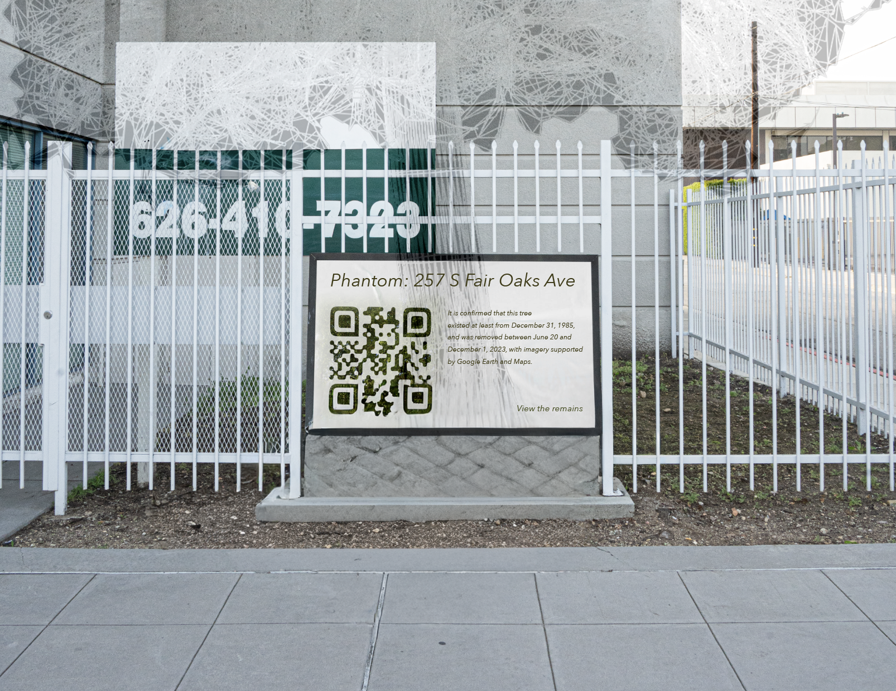
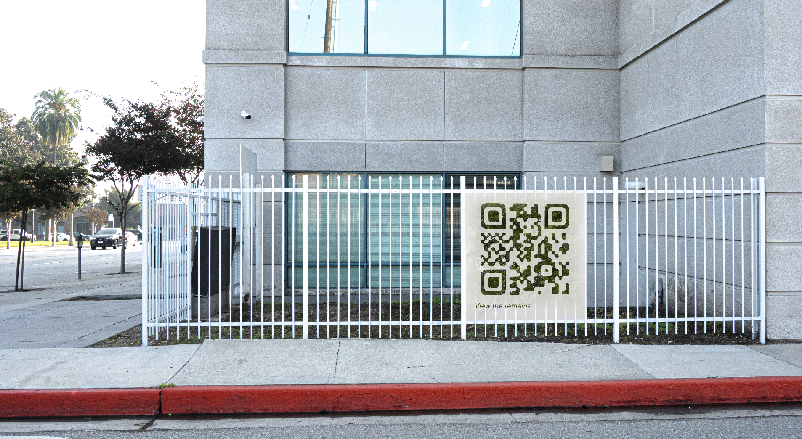
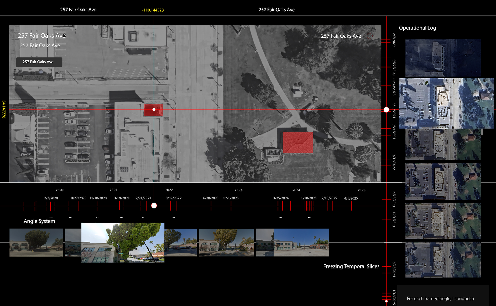

Phantom：257 S Fair Oaks Ave
Introduction
This is a design project that uses the disappearance of a "Digital Ghost Tree" to invite the public to become urban detectives, rediscovering the hidden temporal layers and emotional narratives beneath the everyday. It seeks to transform the city from a static backdrop into an explorable playground, where we are no longer passive users but active detectives and readers who uncover stories and forge emotional connections.
What I found
啦啦啦啊乐乐




